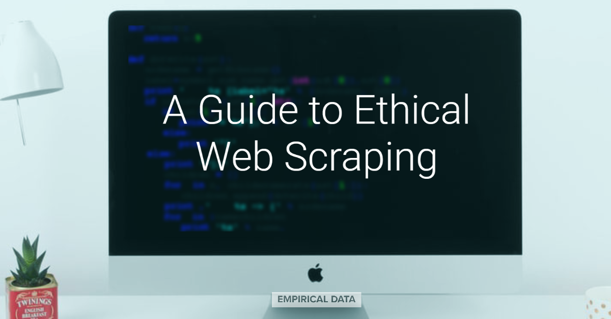

Try Codewars if you want to sharpen your coding skills!
Web scraping is an amazing way how to get the data from the internet for further analysis or for testing your machine learning model. Moreover, scraping technic of collecting data is very easy to use. This combination makes web scraping more and more popular all over the world. However, the one question which should be answered is how much ethical this whole thing is. There are a lot of guides and rules on how you should keep your web scraping ethical and I would like to share them with you.
 Let’s say you need to get some information about specific industry in your country for a simple analysis or for a marketing purpose. Since you know that human research would be overwhelming and it would take ages to finish, you are trying to find some clever solutions on how to get the data. In this article I will show you an example of one of my project about car industry to ilustrate how can web scraping solve your problem.
Let’s say you need to get some information about specific industry in your country for a simple analysis or for a marketing purpose. Since you know that human research would be overwhelming and it would take ages to finish, you are trying to find some clever solutions on how to get the data. In this article I will show you an example of one of my project about car industry to ilustrate how can web scraping solve your problem.
Try Codewars if you want to sharpen your coding skills!

Go to TryHackMe if you want to explore the world of ethical hacking!

Check EdX to find free and interesting courses!
If you have some questions or you want to ask about any of my projects or interest do not hesitate to contact me on a e-mail or through social media.